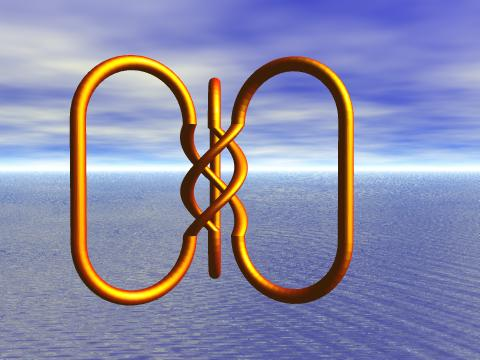
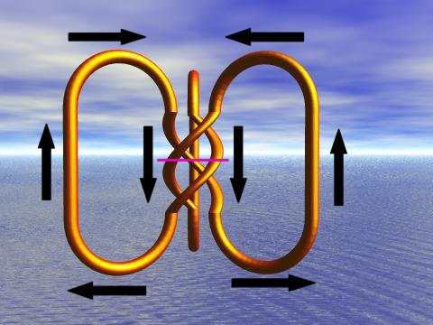

Consider the 3 rings, as shown.
Cut all 3 rings at one location, twist the three cut ends by 120 degress and glue the rings back together.
Note that this does not make the Pattern knot. Its not even a knot. The rotation of 120 degrees only connects the initial 3 rings into one big loop.
Now cut again and twist another 120 degrees. This is a total of 240 degrees from the initial unlinked 3 rings.
This is the Pattern knot. It is the 1st knot to appear in this twisting construction method.
Note that this "says it all" when you consider the rings as flow lines.
When flow expands outward (bottom arrows) there is not twist. When the flow circulates back and begins to compress (top arrows) an inherent twist begins and is manifested as the flow passes through the center constriction.
From another starting point, consider the center plane of the twisting column (pink line.)
Then above this reference line, the flow is twisting and contracting. Below this reference line, the flow is twisting and expanding.
This reminds me of the Jitterbug motion with its rotating (twisting) triangle. Note that the 3 cut ring ends that we twisted also forms a triangle.
With multiple twisting (rotating) triangles, all the Platonic "solids" can be defined. See the article "What's in this polyhedron?" for details.
Usage Note: My work is copyrighted. You may use my work but you may not include my work, or parts of it, in any for-profit project without my consent.